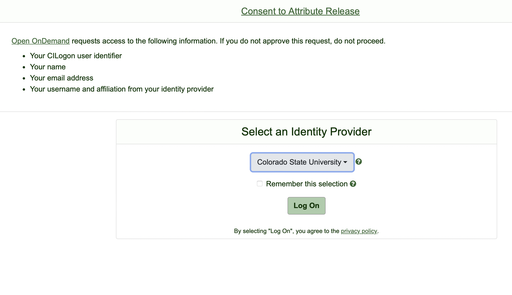
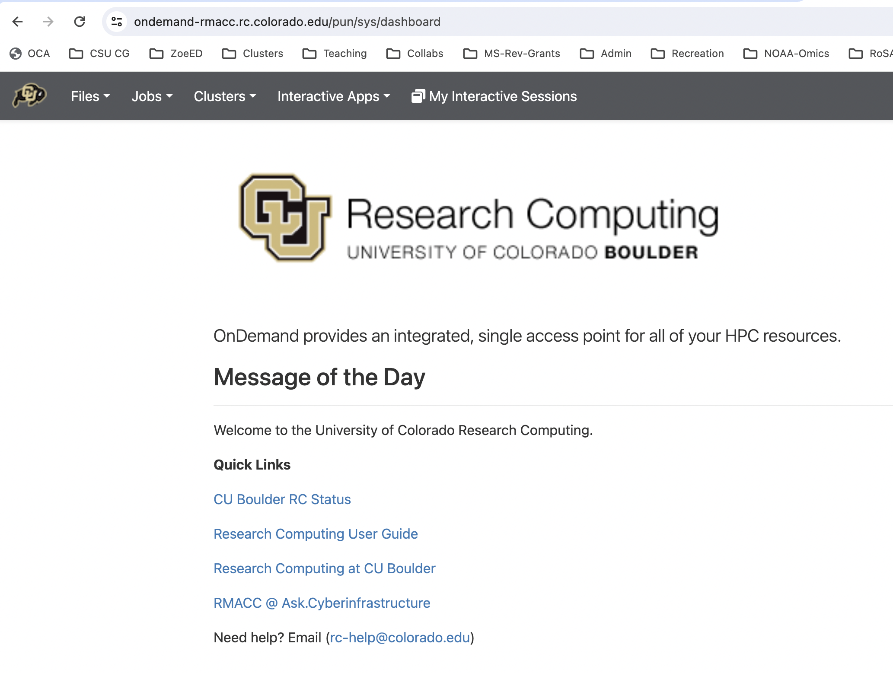
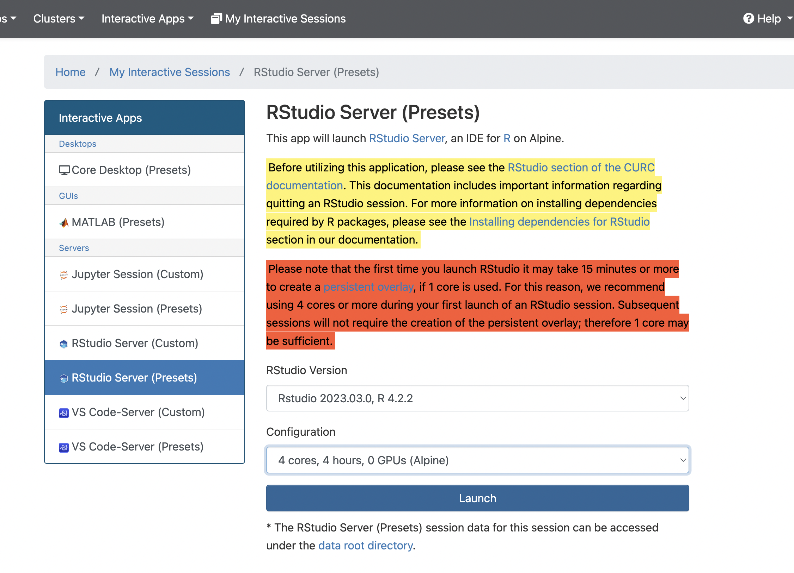
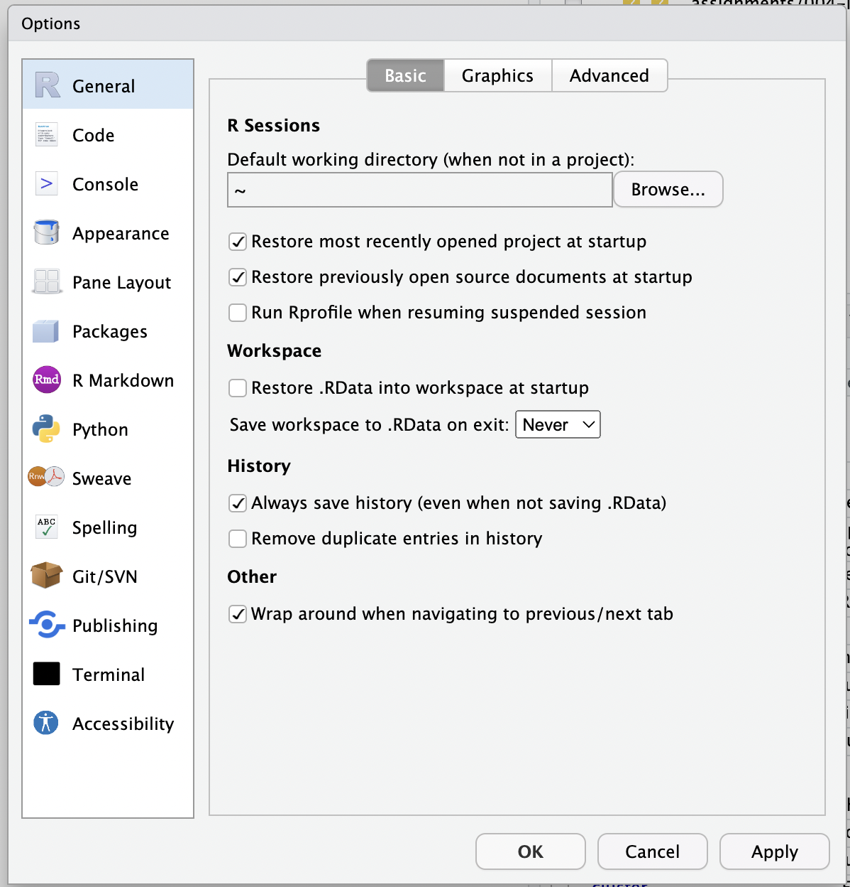
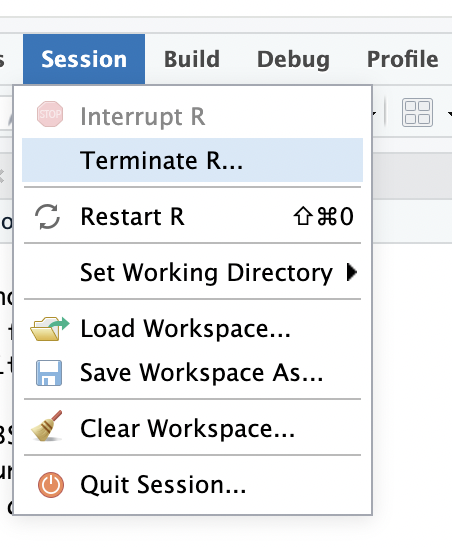
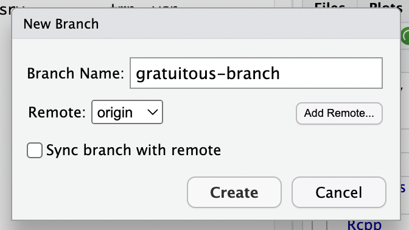

export USER2=$(echo $USER | awk -F@ '{print "."$2"/"$1}')1 OpenOnDemand on Alpine
If you have an account on Alpine, there is a cool way to connect to Alpine through a web browser. This provides a nice way to access your files and do light copying, etc. But, more importantly, this method allows you to interact with your files and projects on the cluster in the familiar RStudio framework. This also provides a useful way for running your own R projects and handling git in R projects on the cluster. Really, I suspect this will be life-changing for many folks that are very familiar with RStudio and wish that they could run analyses in R, using RStudio, on the cluster, just like they do on their laptop or desktop machines.
The approach uses a browser-based portal to the Alpine computing cluster that is supported by CURC and is called Open OnDemand. As a browser-based system, you will connect to Alpine via your web browser. Ultimately, you will be able to run a session of RStudio Server that runs on a compute node on Alpine, interacting with your filesystem on the cluster the way you would with local files using any RStudio session on your laptop. Additionally, you can drive git and get a terminal shell through the RStudio server as well. It is pretty slick if you are comfortable in an RStudio environment.
Full details about OpenOndemand on Alpine can be found at the CURC website here, with a whole section about RStudio here.
1.1 Getting onto RStudio Server on Alpine
In order to establish an RStudio session container/image/overlay, the Alpine administrators recommend using 4 cores, because the initial setup can take a few minutes. After that you can re-attach to that image quickly and use just a single core if you would like. Briefy instructions on how to do that are:
- In your web browser, go to https://ondemand-rmacc.rc.colorado.edu/.
- The first time you click that, it will take you to a page where you must choose which institution’s OpenOnDemand infrastructure you are accessing. Choose
Colorado State University, from the pop-up menu and be sure to select “Remember this selection” and then click “Log On”.
 - That should redirect you to your CSU NetID login page. Authenticate yourself.
- That should drop you into the CURC OnDemand Dashboard page that looks like this:
 - Choose “Interactive Apps–>RStudio Server Presets”, then use the bottom toggle box to choose “4 cores, 4 hours”, and hit “Launch”. This will start making you an RStudio Server container. Again, we choose 4 cores just for the initial setup, but you can choose 1 core in the future.
 - Now, go to your “Interactive Sessions” and you will see messages about your session starting up. Once your session is ready you can connect to it by clicking “Connect to RStudio Server”

- Voila! Clicking “Connect to RStudio Server” opens a new tab with an RStudio window that is pretty much what you are used to.
1.2 Working in RStudio
Note that you can, if you would like, open an RStudio project you have on Alpine by going to the “Project” tab in the upper right (or choosing File -> Open Project... from the main menu) and navigating your way to the .Rproj file. This means that you could interact with your con-gen-csu repo on Alpine as an Rstudio Project. The possibilities are endless. You can open as many files on the cluster as you wish in the RStudio source-code editor window, and edit them with RStudio, making changes directly to them on the cluster. You have a graphical interface to git (but no ssh! see the section Section 1.2.1, below), that is familiar, and you can also get to a shell in the “Terminal” tab. You also have an active R session on the cluster in case you want to analyze any data you have on the cluster with R.
Just as a reminder, the git interface in RStudio can be found on the “git” tab in the upper right panel (typically). You might have to extend the right panel to the left (make it larger) in order to see all the elements of the interface (like push and pull arrows and commit buttons, etc.)
Note that if you open up files in Rstudio on Alpine that Rstudio recognizes as shell script files (because they have a .sh extension), then choosing CMD-Return (on a Mac) or cntrl-Return (on a PC) will send the line that your cursor is on to the Terminal shell (in much the same way that you can evaluate R code from an R script in the R console within RStudio). This provides a very handy way to test your shell scripts line by line on the Alpine bash shell.
At the time of this writing, I have not been able to load the slurm/alpine module in the RStudio Terminal to allow submission of jobs via sbatch in this environment, but I can keep you posted. In the meantime, you can always get a shell in your browser (see the next section).
As always, you should set your RStudio preferences (Tools –> Global Options) so that R does not “Restore .Rdata into workspace at startup” and that it Never “Saves workspace to .Rdata on exit.”:

When you are done using RStudio Server on Alpine, you should terminate your R session, with “Session –> Terminate R…”:

And then Delete the session running on the compute node from your OnDemand Dashboard.
Note that if your time on the compute node runs out before you are done working on RStudio, then unsaved work and variables in your global environment will be lost and RStudio will start saying that it has lost connection (with a bunch of 503 errors).
1.2.1 Using git on Rstudio Server on Alpine OnDemand
The program git works just fine in the OnDemand RStudio Server on when you are just dealing with local files. However it does not seem to have access to ssh. There is simply no ssh at /usr/bin/ssh in the shell that RStudio gets to run. This is super weird. We will have to check with the CURC admins about this.
Update! I spoke with the CURC folks. There are two ways you can deal with it. Method 1 is to install ssh via fakeroot on an apptainer, and Method 2 is to just do it all on the command line.
1.3 Method 1: Install ssh and use RStudio as usual
The CURC pages have a section on installing software on your OpenDemand overlay here. In synopsis, here is what you need to do:
Export a
USER2variable in your~/.bashrc. This is necessary because the@in your username on Alpine flummoxes the system, otherwise. Add this line to your~/.bashrc, before the conda block:Once you have done that, on your shell on Alpine, source your
~/.bashrcto make sure that USER2 is in effect:source ~/.bashrcGet on a compute node with the following command:
acompile --ntasks=4Once you are on the compute node “modify the overlay by launching the overlay using fakeroot” with the following command:
apptainer shell --fakeroot \ --bind /projects,/scratch/alpine,$CURC_CONTAINER_DIR_OOD \ --overlay /projects/$USER/.rstudioserver/rstudio-server-4.2.2_overlay.img \ $CURC_CONTAINER_DIR_OOD/rstudio-server-4.2.2.sifYou might want to check this in the future to make sure that the rstudio server version numbers in the command correspond to what you are using on Open OnDemand.
When the last command returns, you should get a command prompt of
Apptainer>. At this prompt you can give any commands like you would as a root user on a Linux system to install necessary software packages. In this case, to installsshdo:apt-get updateOnce that is done, you can do:
apt install sshThat takes a while to chug through, but it will finish eventually.
Once the above command has finished, you can get out of the Apptainer and off of the acompile node with:
exit exit
Now, when you restart an RStudio server session, you will have access to SSH and the git push and pull buttons will work as expected for branches that are tracking upstream. So, when you make new branches in RStudio, you should click Sync branch with remote.
1.4 Method 2: Just use the command line
If you don’t want to hassle with all of Method 1 (although it really isn’t a hassle at all!) you can use RStudio to stage and commit files (and gitignore them), just like you would on Rstudio on your laptop. And you can also switch branches and create new branches. But you can’t do git push and git pull operations, on RStudio Server on Alpine. Instead, you can use the browser-based shell (see the next section) to do your git push and git pull.
Note that if you create a new branch in RStudio on Alpine, you should not click the “Sync branch with remote” button, because that operation will fail, since it requires ssh. However, once you have made the branch, you can go to your terminal (either in the browser or through your terminal emulator (i.e. tmux) and then cd to the repo. Check with git branch to make sure that you are on the new branch and then do
git push -u origin <new-branch>where you replace <new-branch> with the actual branch name. The -u option tell git to create a new branch named <new-branch> on origin that automatically tracks <new-branch> on your local repository, so that from now on, any time you are on <new-branch>, from now on, you can just say git pull or git push without specifying anything else, and git will automatically know to push or pull to <new-branch> on origin.
For example, in RStudio I created a new branch called gratuitous-branch and I told RStudio not to sync the branch with remote:

Then I went to my shell and did git branch to confirm I was on that branch:
(base) [login-ci1: ~]--% cd projects/con-gen-csu/
(base) [login-ci1: con-gen-csu]--% git branch
005-trim-map2
fastp-iteration
* gratuitous-branch
mainThe asterisk tells me that is the branch I am on! So now I do:
git push -u origin gratuitous-branchNothing got transferred because I had no changes on this new branch, but the output message from git is good to see:
Total 0 (delta 0), reused 0 (delta 0), pack-reused 0
remote:
remote: Create a pull request for 'gratuitous-branch' on GitHub by visiting:
remote: https://github.com/eca-home/con-gen-csu/pull/new/gratuitous-branch
remote:
To github-home:eca-home/con-gen-csu.git
* [new branch] gratuitous-branch -> gratuitous-branch
branch 'gratuitous-branch' set up to track 'origin/gratuitous-branch'.Most importantly it tells me that branch 'gratuitous-branch' set up to track 'origin/gratuitous-branch'. which is what we want.
We can also verify branch tracking by using git branch -vv:
(base) [login-ci1: con-gen-csu]--% git branch -vv
005-trim-map2 9901ce8 [origin/005-trim-map2] answer key
fastp-iteration 67a106e [origin/fastp-iteration] done
* gratuitous-branch 034d018 [origin/gratuitous-branch] Merge branch 'eriqande:main' into main
main 034d018 [origin/main] Merge branch 'eriqande:main' into mainHere, we see that all my local branches are set up to track a remote branch of the same name on origin. So, if I commit any changes on a branch, I can just say,
git push or
git pulland it will push or pull to/from the correct branch on the remote origin. Cool!
1.5 Other places to go from the Dashboard
We should also mention that if you go to the “Files” tab on the original OnDemand Dashboard page, you get a nice web-browser-based file browser of your files on Alpine. This can be a good way to transfer a couple of small files here and there, but don’t transfer too much. For big files, or for transferring things to scratch, you should use globus, as explained here.
Finally, from you Alpine dashboard in your browser, you can even get a shell (in your browser) on Alpine. Do that by selecting Clusters--> >_Alpine Shell. It is a fully functional shell terminal in your browser. Apparently you can even get to this on your phone or tablet browswer. (Just when you thought cluster computing couldn’t intrude any more on your life than it currently is—it is gonna get you via your devices).
In the shell, you can choose different color themes from the selector in the upper right. Also, you can open as many shells as you want—each one will go in a new browser tab.
Enjoy!